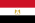
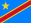
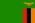
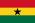
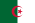
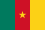

| No. | Image | Country | win | year |
|---|---|---|---|---|
| 1 |  | EGYPT | ( 4-0 ) | 1957 |
| 2 |  | Congo | ( 3-2 ) | 1972 |
| 3 |  | Zimbabwe | ( 5-2 ) | 1989 |
| 4 |  | Ghana | ( 3-1 ) | 2000 |
| 5 |  | Algeria | ( 2-1 ) | 2007 |
| 6 |  | Cameroon | ( 4-0 ) | 2015 |
كأس الأمم الأفريقية (بالفرنسية: Coupe d'Afrique des Nations) وتعرف عادة الكان أو كأس الأمم الأفريقية توتال إنرجي الراعي الرئيسي لها، هي المسابقة الدولية الرئيسية لكرة القدم للرجال في أفريقيا. تمت المصادقة عليها من قبل الاتحاد الأفريقي لكرة القدم، عقدت لأول مرة في عام 1957 بالعاصمة السودانية الخرطوم . منذ عام 1968، أصبحت تقام كل عامين. كان حاملو اللقب يتأهلون لبطولة كأس القارات. مصر هي أنجح دولة في تاريخ البطولة، حيث فازت في البطولة سبع مرات (بما في ذلك عندما كانت مصر تعرف باسم الجمهورية العربية المتحدة بين عامي 1958 و 1961). تم منح ثلاث كؤوس مختلفة في تاريخ البطولة، حيث فازت غانا والكاميرون بالكأسين الأول والثاني بعد فوز كل منهما بالبطولة ثلاث مرات. تم منح الكأس الحالية لأول مرة في عام 2002 وفازت بها مصر إلى أجل غير مسمى بعد فوزها بلقبها الثالث على التوالي في عام 2010. اعتبارا من عام 2013، أُقيمت البطولة في السنوات الفردية حتى لا تتصادم مع كأس العالم. حسب لوائح الاتحاد الأفريقي لكرة القدم، يتم منح الفريق الفائز ثلاثين ميدالية ذهبية، الفريق الوصيف ثلاثين ميدالية فضية والفريق صاحبا المركز الثالث ثلاثين ميدالية برونزية. بالنسبة للكأس يتم تقديم الكأس الأصلية لاتحاد المنتخب البطل، يتم إعادته إلى الاتحاد الأفريقي لكرة القدم قبل شهرين من بداية البطولة التالية ويقدم له نسخة مقلدة بأبعاد 4-5 حسب حجم الكأس الأصلية. .